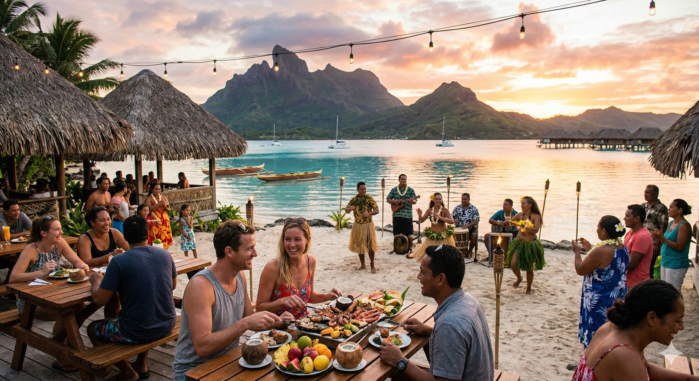
Browse by category to find your perfect experience.
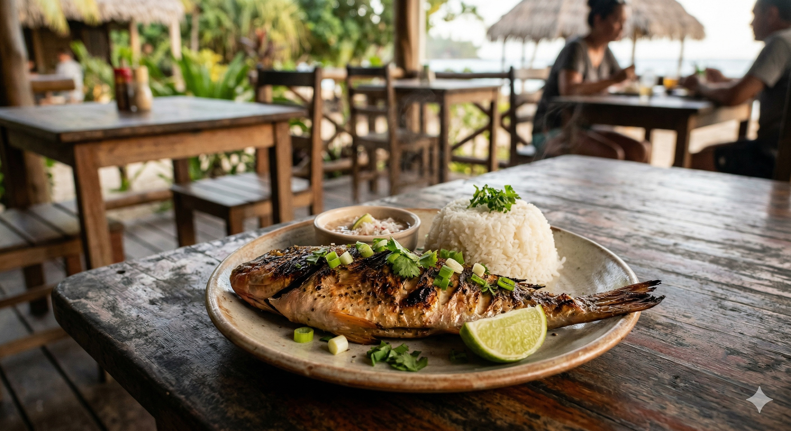
Five of Taniti's ten restaurants focus on the island's fishing heritage, serving freshly caught fish and rice prepared in traditional Tanitian style. Simple, authentic, and delicious.
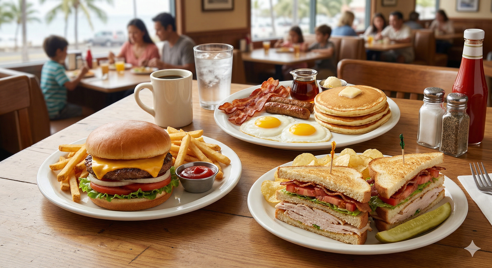
Three restaurants cater to visitors craving familiar comfort food — from burgers and sandwiches to classic breakfast plates. Great for families and picky eaters.
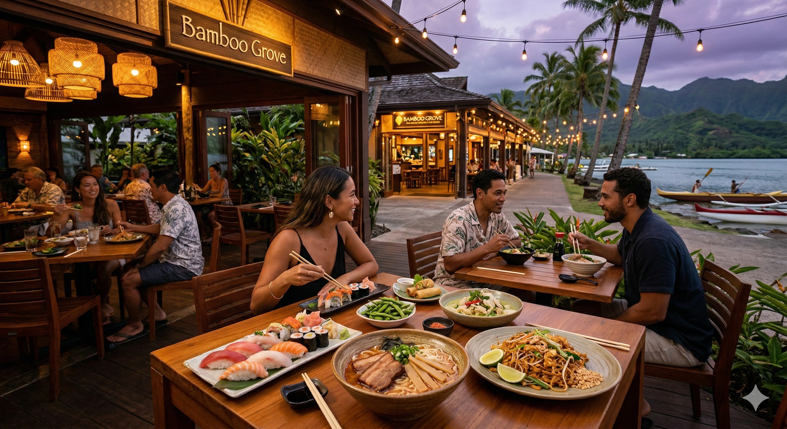
Two restaurants offer a range of Pan-Asian dishes including sushi, ramen, Thai-inspired plates, and more — a flavorful change of pace during a longer stay on the island.
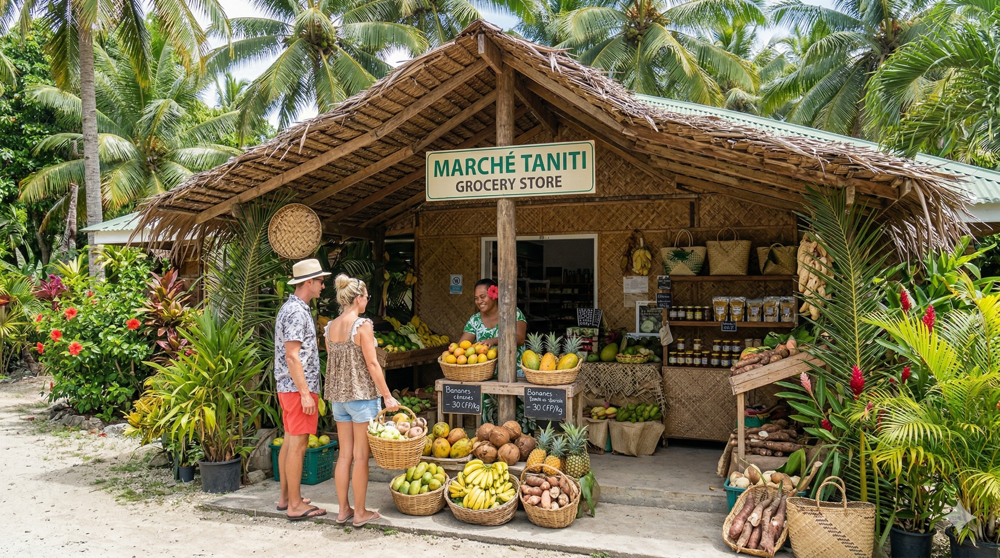
Taniti has two supermarkets, two smaller grocery stores, and one 24-hour convenience store for snacks and essentials. Perfect for self-catering travelers or those staying in B&Bs.
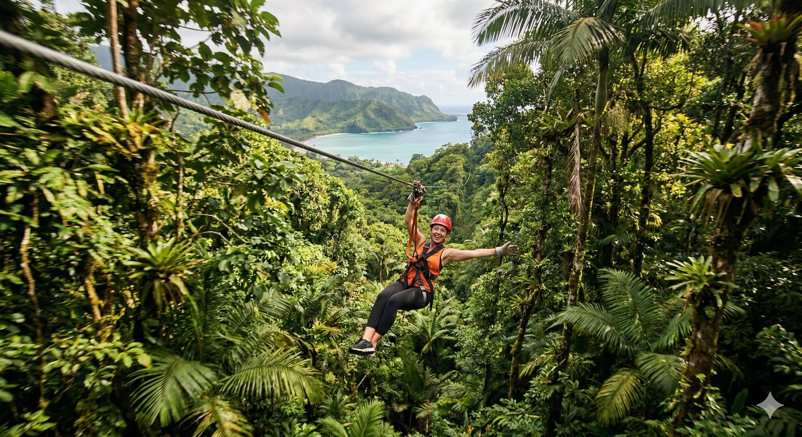
Fly through the canopy of Taniti's lush rainforest on an exhilarating zip-line course. One of the island's most popular activities, located in Merriton Landing on the north side of Yellow Leaf Bay.
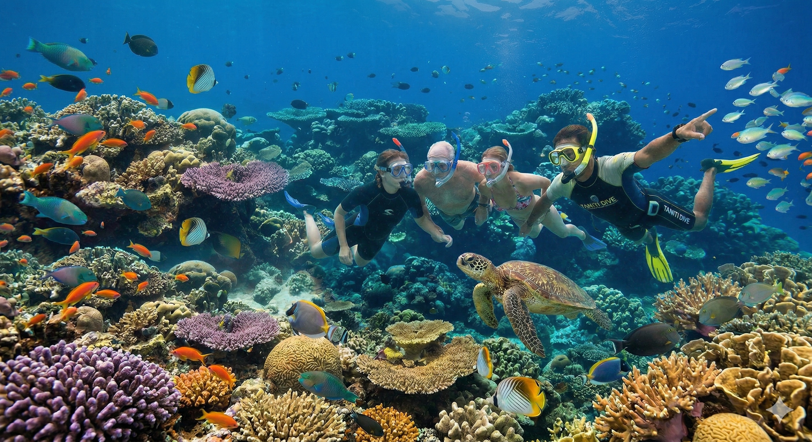
Discover the vibrant underwater world surrounding Taniti's coastline. Equipment rentals and guided snorkeling tours are available for all skill levels right from Yellow Leaf Bay.
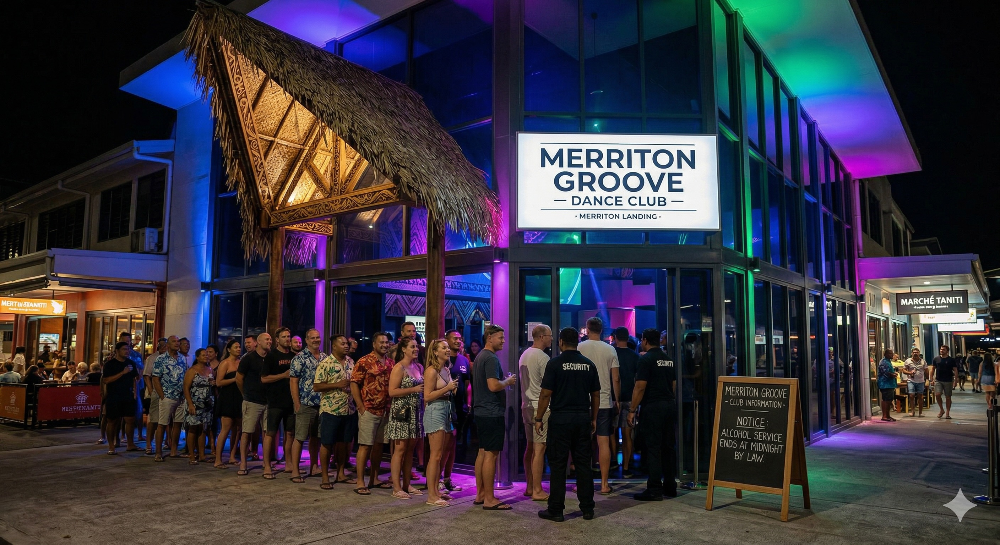
Taniti recently opened a new dance club in the Merriton Landing area, quickly becoming a favorite evening destination for visitors. Note: alcohol service ends at midnight by law.
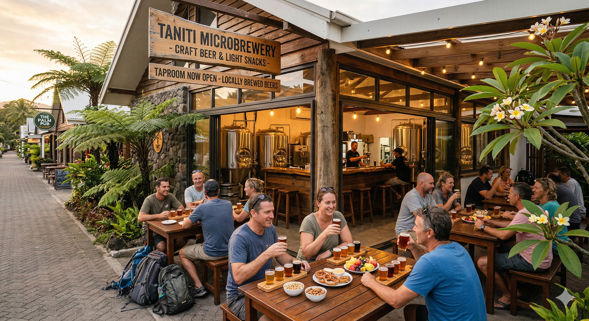
Several pubs are scattered throughout Taniti City, including a craft microbrewery offering locally brewed beers alongside light snacks. A relaxed spot to unwind after a day of exploring.
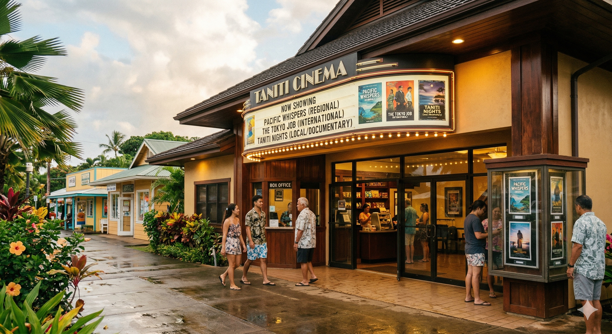
Catch a film at Taniti's local movie theater, showing a rotating selection of international and regional films. A great option for a relaxing evening or a rainy afternoon.
For a fun, casual outing, Taniti has both an arcade and a bowling alley. Popular with families and groups, both are located in the Merriton Landing entertainment district.
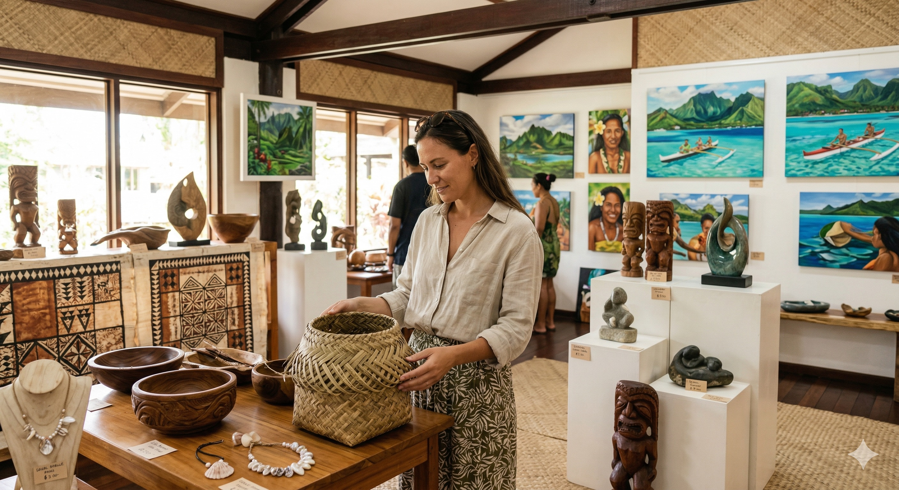
Browse a selection of local and regional artwork at Taniti's art galleries. Indigenous crafts, paintings, and sculpture are featured, with many pieces available for purchase as unique souvenirs.
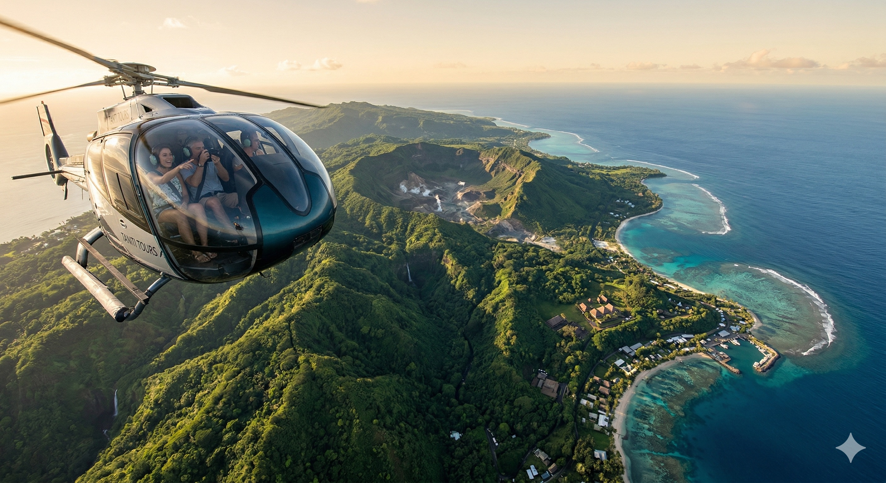
See the entire island from above on a scenic helicopter tour. Operators offer routes over the volcano, rainforest, and coastline — an unforgettable way to experience Taniti's landscape.
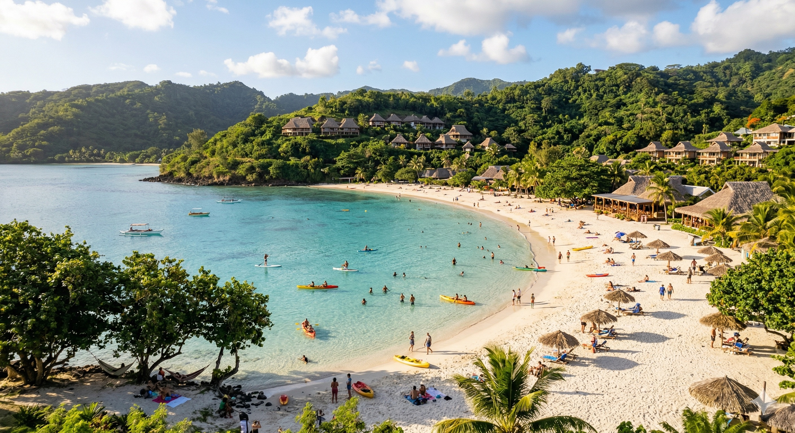
The white, sandy beaches encircling Yellow Leaf Bay are the crown jewel of Taniti. Most tourists spend the bulk of their time here, enjoying the calm clear waters and scenic native architecture of Taniti City nearby.
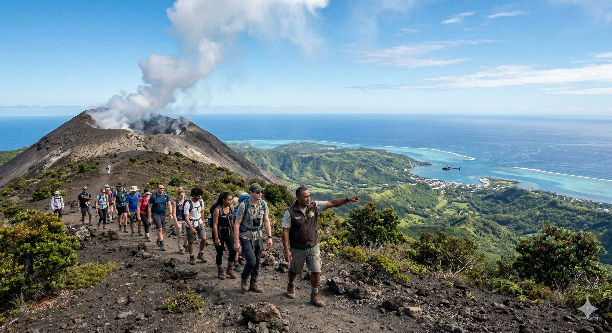
One of Taniti's most dramatic attractions, the island's small active volcano draws visitors from around the world. Guided hikes to the summit offer breathtaking views across the entire island and surrounding Pacific.
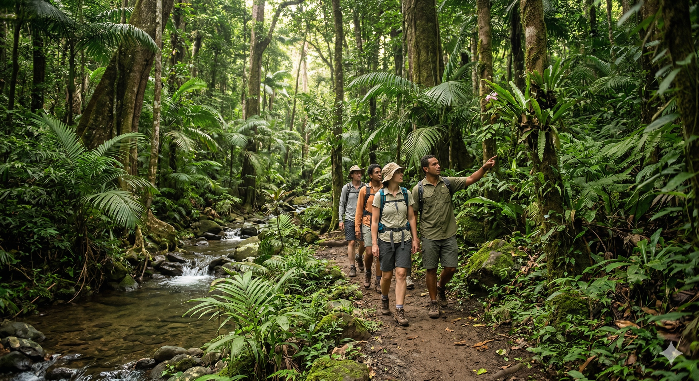
Taniti's lush tropical rainforest covers much of the island's interior and is best explored on foot. Guided hike tours wind through dense canopy, past streams, and alongside rare native flora and fauna.
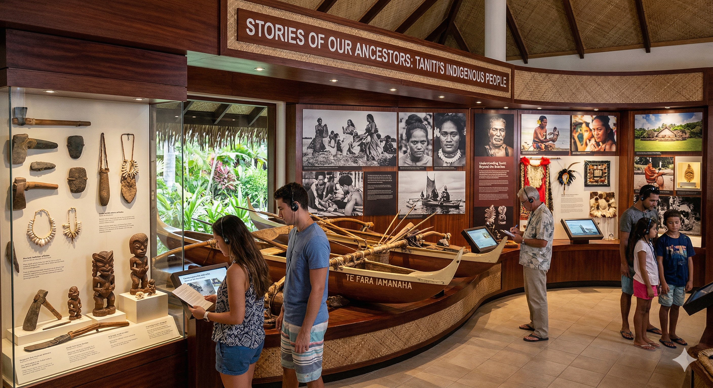
Taniti City's local history museum tells the story of the island's indigenous people through artifacts, photography, and cultural displays. A must-visit for anyone wanting to understand Taniti beyond the beaches.
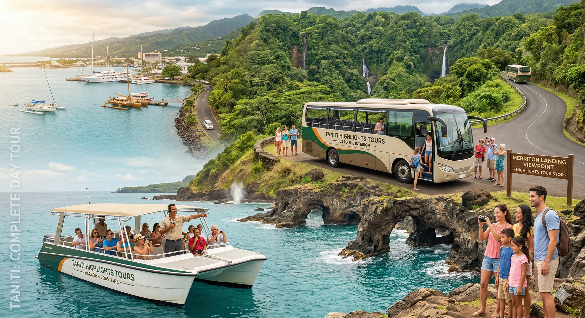
Guided boat and bus tours provide an easy way to see Taniti's highlights in a single day — from the harbor and rocky coastline to the rainforest interior and Merriton Landing.
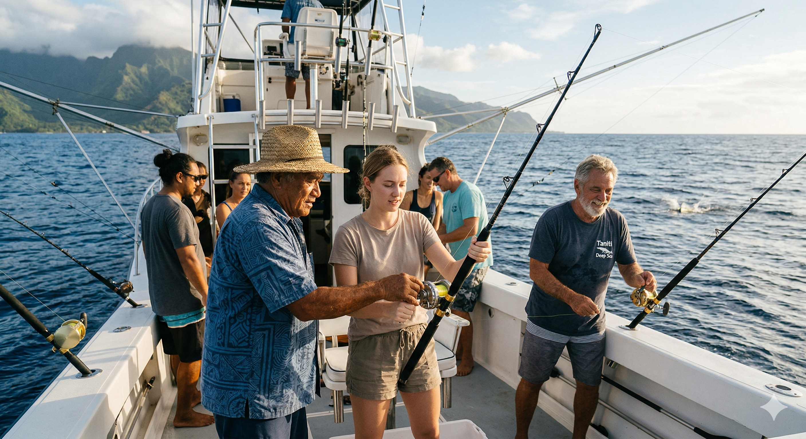
Set out into the Pacific on a chartered fishing excursion led by experienced local captains. Whether you're an experienced angler or a first-timer, this is a unique way to connect with Taniti's fishing heritage.